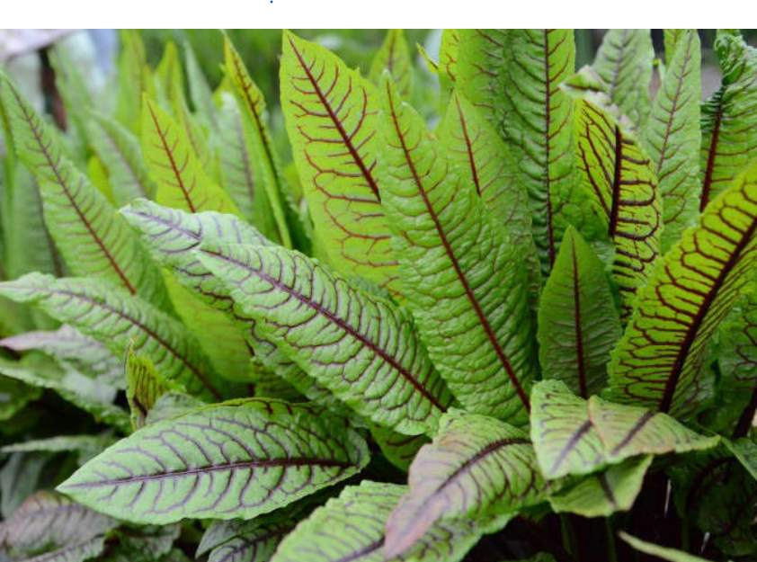
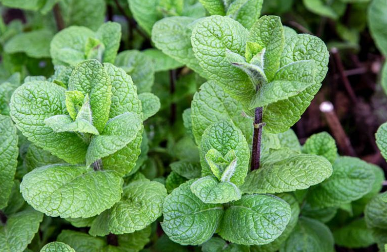
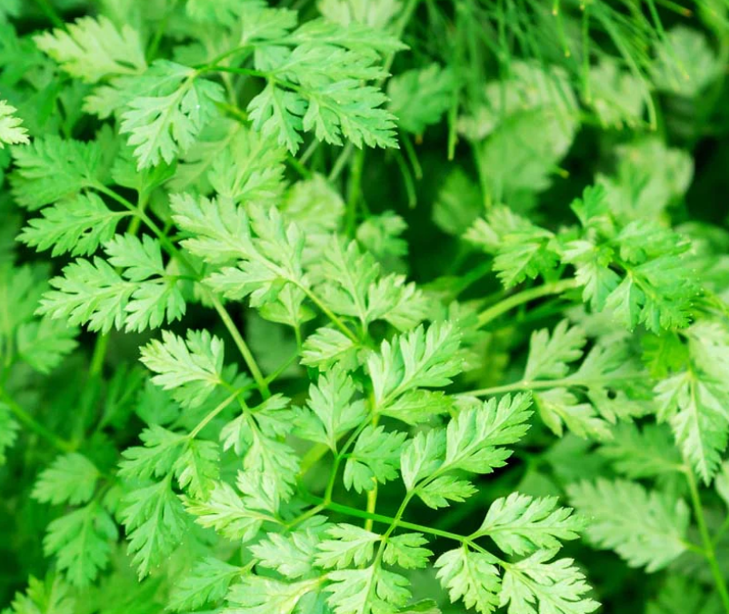
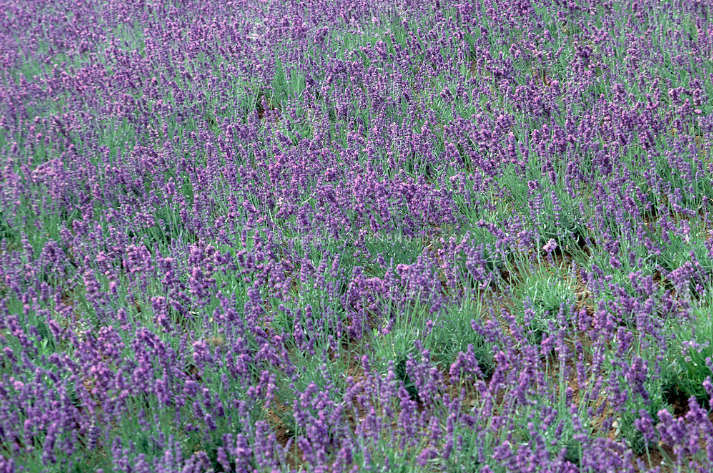
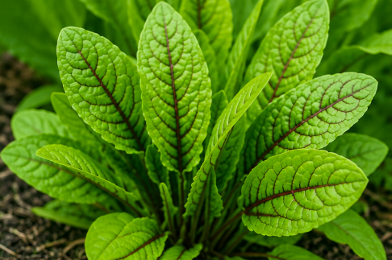
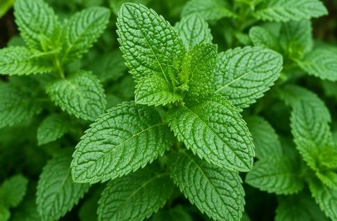
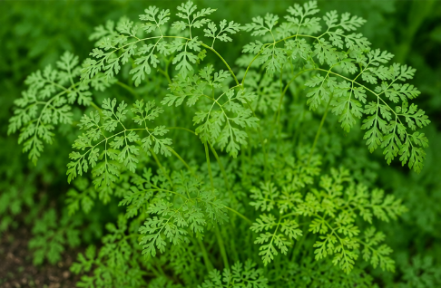
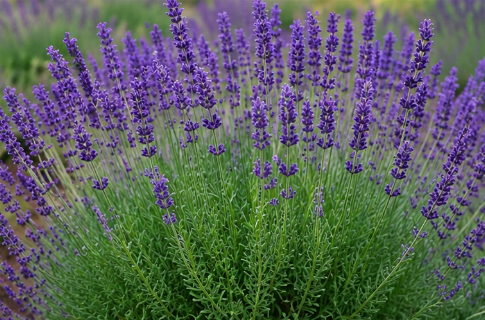

Nature is filled with amazing plants that have been used for looking, medicine, and fragrance for centuries. Type the name of one of our featured plants—Sorrel, Mint, Chervil, or Goodwin Creek Lavender—to see a picture of the plant. Then, click on the image to uncover fascinating facts about its history, uses, and unique characteristics.
Whether you're a gardener, a cook, or simply curious about the natural world, there's always something new to learn about these incredible herbs. Start exploring and discover your next favorite plant!

Sorrel

Mint

Chervil

Lavender

Sorrel is a hardy perennial herb that grows best in full sun to partial shade and prefers moist, well-drained soil. Its bright green leaves have a tangy, lemon-like flavor that adds freshness to salads, soups, sauces, and fish dishes. Harvest the young leaves regularly to encourage new growth and enjoy the best flavor.

Mint is an easy-to-grow herb that thrives in partial to full sun and consistently moist soil. Because it spreads quickly, many gardeners grow it in containers to keep it from taking over the garden. Its cool, refreshing flavor is popular in teas, desserts, fruit salads, sauces, and drinks like mojitos.

Chervil prefers cool temperatures, partial shade, and rich, moist soil. This delicate herb has a mild flavor reminiscent of parsley and anise, making it a favorite in French cuisine. Chervil is commonly used to season eggs, chicken, seafood, soups, and creamy sauces, and it is best added at the end of cooking to preserve its flavor.

Goodwin Creek Lavender grows best in full sun and well-drained soil and is highly drought tolerant once established. This fragrant variety is prized for both its beautiful silvery foliage and aromatic purple flowers. In the kitchen, its flowers can be used sparingly to flavor baked goods, teas, syrups, and herb blends such as Herbes de Provence.